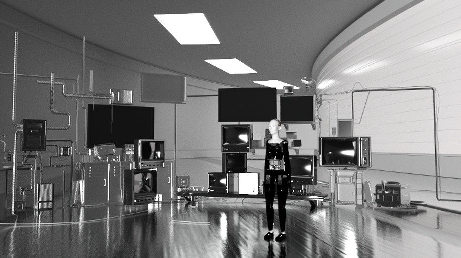
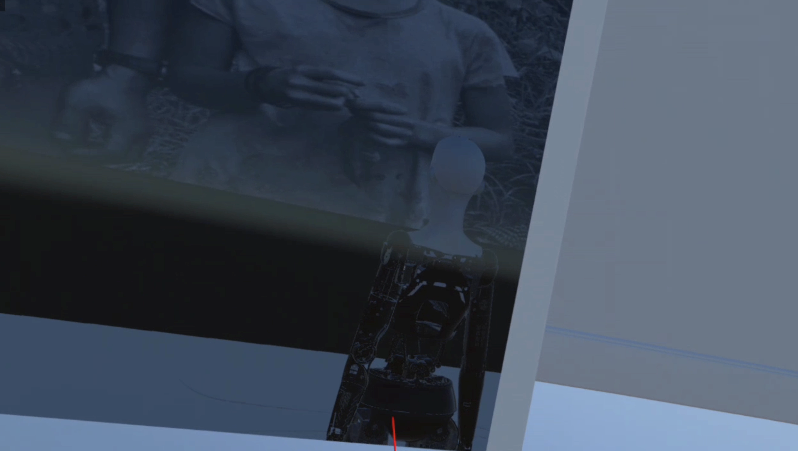
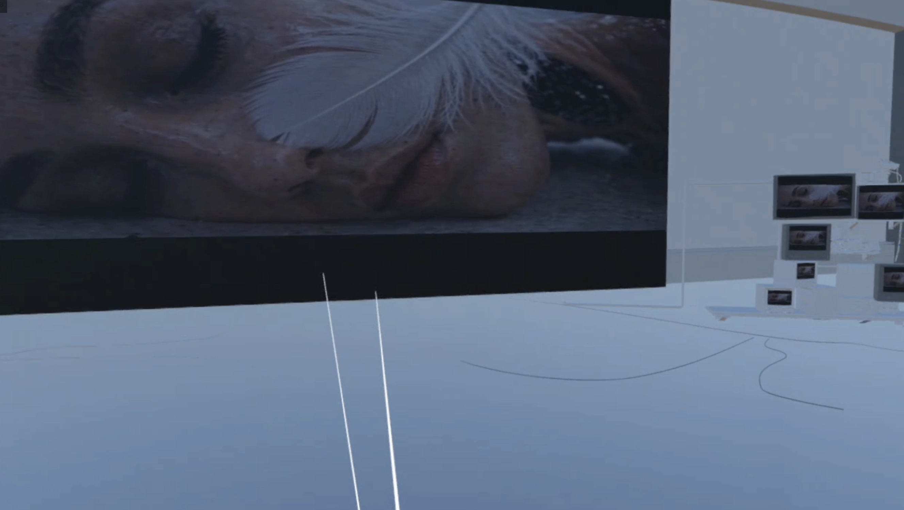

Sophia:Awakening
A conceptual 30s film designed for Hanson Robotics and its humanoid robot Sophia. The project uses fashion as a form of emotional and psychological expression, visualizing the transformation of a robot from a controlled system into a more autonomous and self-aware presence.The project combines VR and AIGC technologies to create an immersive cinematic experience that explores the relationship between artificial intelligence, embodiment, and human emotion.
Tools: C4D, Seedance 2.0, Image2, Unity.
AIGC VIDEO

3D Lab Design


VR experience Design